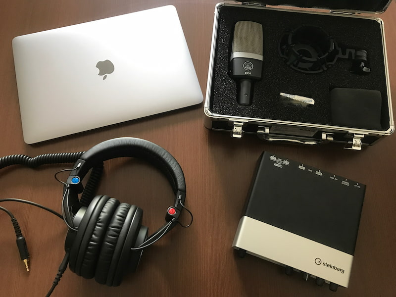

TFUM
Tomotaka's Favorite Utattemita Movies
about this website
feat.初音ミクの曲を歌ってみた動画集
feat.GUMIの曲を歌ってみた動画集
feat.鏡音リン・鏡音レンの曲を歌ってみた動画集
feat.flowerの曲を歌ってみた動画集
about
about this website

このサイトは自分がよく聴いている「歌ってみた」動画のリンク集です。他のページにリンクが貼ってあるのでぜひ聴いてみてください！
↑TOP